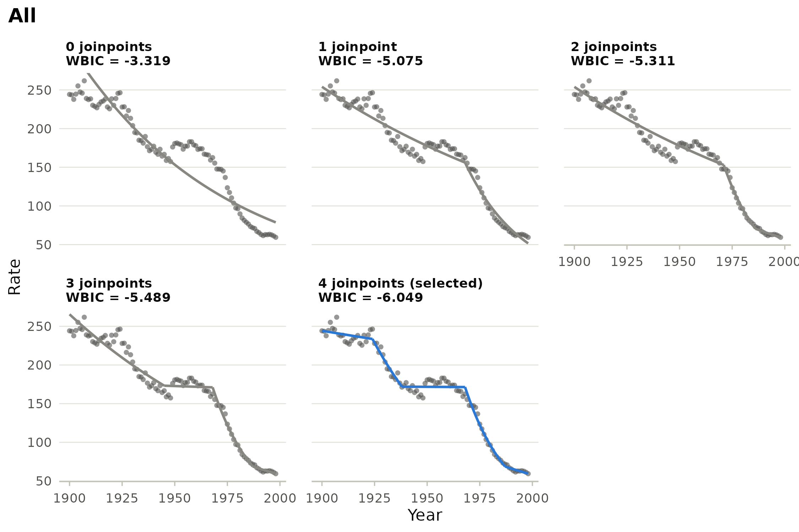
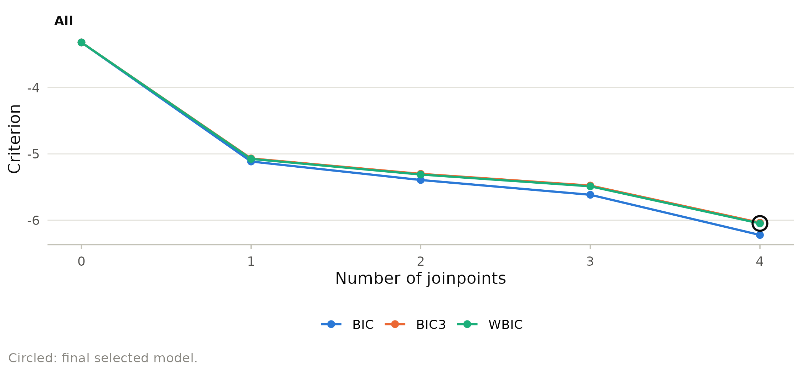
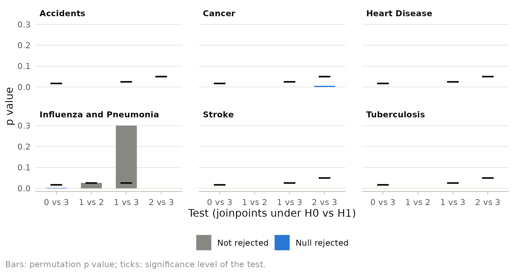

Adding a joinpoint almost always improves the fit (not always: placement rules can exclude the best location of an extra joinpoint), so the number of joinpoints has to be chosen by a rule that weighs fit against complexity. The permutation test of Kim et al. (2000) was long the standard; the weighted BIC (WBIC) of Kim et al. (2023) reaches similar answers in a fraction of the time. Applied to the same data, different rules can give different numbers of joinpoints, and analysts wonder which answer to trust. This vignette shows what each rule does, reproduces a published permutation test analysis, and shows how to remove joinpoints that are statistically detectable but too small to matter.
The candidates
For every number of joinpoints from kmin to
kmax, joinpoint() finds the best fitting model
by an exhaustive grid search. Model selection only chooses among these
best fits. plot_models() shows them side by side for one
cohort, with the criterion of each model in its title.
stroke <- subset(us_mortality, cause == "Stroke")
fit <- joinpoint(stroke, year, rate, kmax = 4, ci_method = "parametric")
plot_models(fit, ncol = 3)
Information criteria
The BIC family has the form
ln(SSE / n) + penalty(k) ln(n) / n:
-
BIC uses the penalty
2k + 2(intercept, slope,kslope changes andklocations). It detects small changes but tends to over fit. -
BIC3 uses the harsher
3k + 2and behaves like the permutation test. - WBIC, the package default, mixes the two with a weight equal to the largest local partial R^2 of a slope change, so clear changes are penalized like BIC3 and subtle ones like BIC (Kim et al. 2023).
- Modified BIC (Zhang and Siegmund 2007) adds to the BIC terms for the determinant of the design and the residual sum of squares; it is the most conservative.
- Data dependent selection (DDS) picks between the BIC and BIC3 answers using the size of the detected changes.
plot_selection() draws the criteria against the number
of joinpoints.
plot_selection(fit)
The answers differ across causes and methods:
methods <- c("bic", "bic3", "wbic", "mbic", "dds")
k <- sapply(methods, function(m) {
f <- joinpoint(us_mortality, year, rate, by = "cause", kmax = 4,
method = m, ci_method = "parametric")
model_selection(f)$selected$joinpoints
})
rownames(k) <- levels(us_mortality$cause)
k
#> bic bic3 wbic mbic dds
#> Accidents 4 4 4 1 4
#> Cancer 4 4 4 2 4
#> Heart Disease 4 4 4 4 4
#> Influenza and Pneumonia 4 2 2 2 2
#> Stroke 4 4 4 4 4
#> Tuberculosis 4 4 4 4 4With 99 years of precise data, most criteria use all four joinpoints
allowed: the changes are large relative to the noise. The modified BIC
is far more conservative for accidents and cancer, and for influenza and
pneumonia only BIC keeps four joinpoints. BIC never selects fewer
joinpoints than BIC3 because its penalty is smaller for every
k. Where the methods agree the answer is robust; where they
disagree, the extra joinpoints of the liberal criteria mark modest
changes that deserve cautious interpretation.
The permutation test
The permutation test (Kim et al. 2000) tests k = a
joinpoints against k = b sequentially, starting from
a = kmin and b = kmax: a rejection raises
a, otherwise b falls, until the two meet. Each
test permutes the residuals of the null model, refits both models to
every permuted data set, and uses the level
alpha / (kmax - a) to keep the overall probability of over
fitting below alpha.
A published tutorial (van Doren 2024) analyzed the mortality data with linear models, at most three joinpoints and the permutation test with 4499 permutations, and selected one joinpoint for influenza and pneumonia and three for every other cause. The package reproduces these selections:
fit_perm <- joinpoint(us_mortality, year, rate, by = "cause", log = FALSE,
kmax = 3, method = "permutation",
ci_method = "parametric")
model_selection(fit_perm)$selected[, c("cause", "joinpoints")]
#> cause joinpoints
#> 1 Accidents 3
#> 2 Cancer 3
#> 3 Heart Disease 3
#> 4 Influenza and Pneumonia 1
#> 5 Stroke 3
#> 6 Tuberculosis 3The sequence of tests shows why influenza and pneumonia stopped at one joinpoint: the test of one against two joinpoints gave a p value just above its level of 0.025.
plot_selection(fit_perm)
Permutation p values are Monte Carlo estimates, so a p value close to its level can fall on either side with another seed; more permutations reduce the Monte Carlo error but cannot settle a p value that truly sits at the level. Report such borderline decisions as such, and use the WBIC when computing time matters.
Joinpoints too small to matter
With long, precise series even small changes of slope can become statistically significant. The minimum APC difference worth detecting (MADWD) is a substantive filter applied after selection: if any two adjacent segments differ by less than the threshold (in percentage points), the best model with one joinpoint fewer is taken, until all adjacent segments pass.
fit_madwd <- joinpoint(stroke, year, rate, kmax = 4, method = "bic",
ci_method = "parametric",
control = jp_control(madwd = 2))
model_selection(fit_madwd)$madwd
#> joinpoints min_difference result
#> 1 4 1.9800485 Fail
#> 2 3 0.8899904 Fail
#> 3 2 3.5952573 PassWith a threshold of 2 percentage points, the four and three joinpoint models fail because two adjacent segments differ by less than that, and the two joinpoint model is kept. Choose the threshold before looking at the results; changing it until the trends look as expected defeats its purpose.
References
Kim HJ, Fay MP, Feuer EJ, Midthune DN (2000). Permutation tests for joinpoint regression with applications to cancer rates. Statistics in Medicine 19:335-351.
Kim HJ, Chen HS, Midthune D, et al. (2023). Data-driven choice of a model selection method in joinpoint regression. Journal of Applied Statistics 50:1992-2013.
van Doren T (2024). Estimating time points of significant change in cause-specific mortality: joinpoint regression in R. The Denominator. doi:10.6069/JK1Y-7Z16
Zhang NR, Siegmund DO (2007). A modified Bayes information criterion with applications to the analysis of comparative genomic hybridization data. Biometrics 63:22-32.